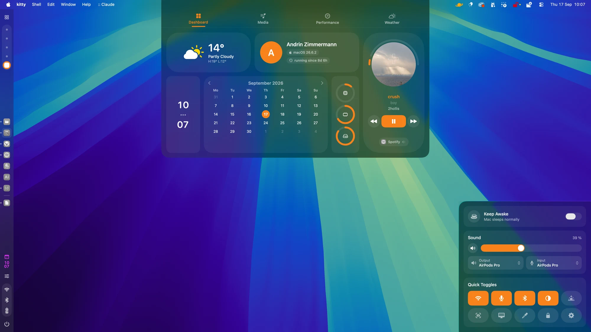
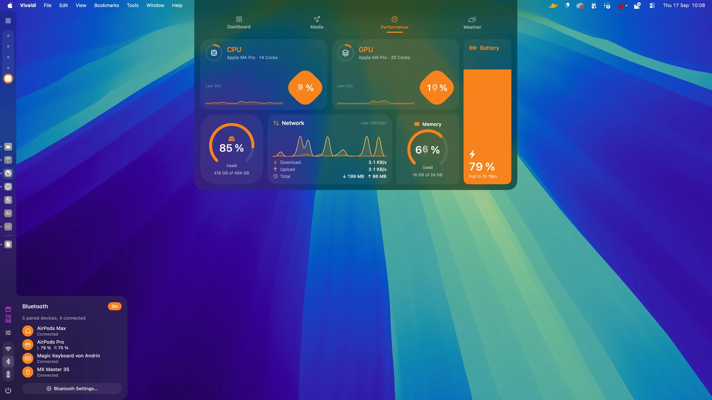

ApolloShell
A desktop shell for macOS Tahoe: sidebar, dock, launcher and dashboard, built from blocks you arrange yourself.
Download for macOS
.dmg
$ brew trust --tap Silvertree2010/apolloshell $ brew tap Silvertree2010/apolloshell $ brew install apolloshell

Panels at the edges, nothing in the way.
A sidebar down the left, a dashboard from the top, a control centre in the corner. Finder, the menu bar and the Dock keep working.
System stats, one click away.
CPU, GPU, memory, network and battery, plus your connected Bluetooth devices.
